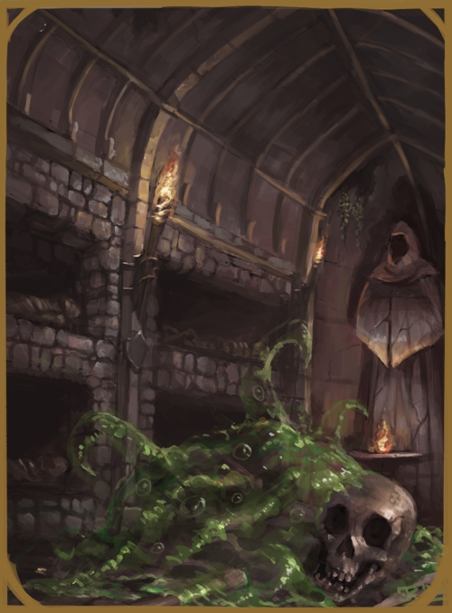

OOZE
SMALL/MEDIUM MAGIC BEAST

Lurking within caves and unkept ruins and dungeons are strange magical creatures known
as oozes. These globs of translucent matter have no head or body, nor heart or organs.
They are simply slow-moving "living" matter. Oozes will absorb and dissolve things
within reach and will grow based on what they absorb. However, even
without substance, Oozes will live on for their life span. Once an ooze reaches
critical mass, it will split into two new small oozes and they will both carry on
absorbing and growing. Although it is not proven,
oozes are though to have been once created by a mad enchanter and have since spread
throughout the land.
OOZE CULTURE
Oozes have no intelligence nor methods of communications.
OOZE RELIGION
Oozes have no intelligence whatsoever and therefore cannot think, let alone worship.
OOZE DIMORPHISMS
Oozes are hermaphrodites and have no male or female variations nor differences.
SMALL
GENERAL ATTRIBUTES
| AGE | HEIGHT | SIZE | SIGHT |
| 4-5 | ~2'05'' | Small - 0.5x0.5 | 5/5/5 |
MOVEMENT
| RUNNING | CLIMBING | SWIMMING | FLYING |
| 3 - Good | 2 - Good | 2 - Good | - |
ABILITY SCORES
| STR | VIT | CON | AGI | DEX | INS | INT | WILL | WIS | CHA | BEA |
| 1 | 4 | 14 | 1 | 1 | 3 | 0 | 15 | 0 | 0 | 1 |
COMBAT ABILITY
| WOUNDS | INITIATIVE | ATTACK (MELEE) | ATTACK (RANGED) | MIGHT |
| 4 | 3 | 2 | 2 | 1 |
| DODGE | PARRY | DAMAGE | NAT. ARMOUR | PRESENCE (POWER) | PRESENCE (BEAUTY) |
| 2 | 0 | 0 | 1 | 6 | - |
NATURAL WEAPONS
| WEAPON | TYPE | MIGHT | DAMAGE | ADDITIONAL |
| Ooze Tendril | Primary | +0 | +0 | If it hits, the target is automatically partially grappled.
If the target is already partially grappled, they are fully grappled. |
MEDIUM
GENERAL ATTRIBUTES
| AGE | HEIGHT | SIZE | SIGHT |
| 6-30 | ~4'01'' | Medium - 1x1 | 7/7/7 |
MOVEMENT
| RUNNING | CLIMBING | SWIMMING | FLYING |
| 4 - Good | 3 - Good | 3 - Good | - |
ABILITY SCORES
| STR | VIT | CON | AGI | DEX | INS | INT | WILL | WIS | CHA | BEA |
| 2 | 6 | 14 | 1 | 1 | 3 | 0 | 15 | 0 | 0 | 1 |
COMBAT ABILITY
| WOUNDS | INITIATIVE | ATTACK (MELEE) | ATTACK (RANGED) | MIGHT |
| 6 | 3 | 2 | 2 | 2 |
| DODGE | PARRY | DAMAGE | NAT. ARMOUR | PRESENCE (POWER) | PRESENCE (BEAUTY) |
| 2 | 0 | 0 | 1 | 7 | - |
NATURAL WEAPONS
| WEAPON | TYPE | MIGHT | DAMAGE | ADDITIONAL |
| Ooze Tendril | Primary | +0 | +0 | If it hits, the target is automatically partially grappled.
If the target is already partially grappled, they are fully grappled. |